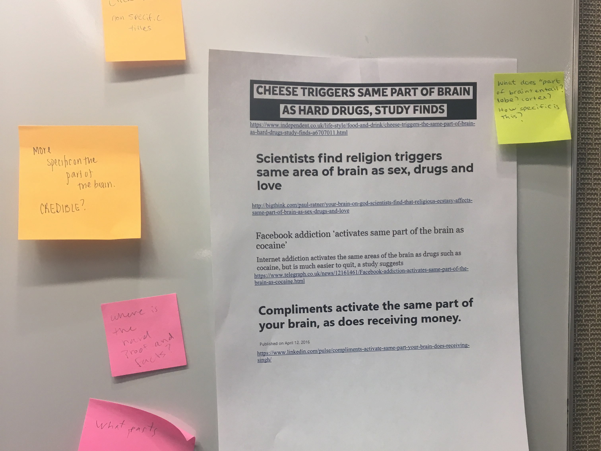
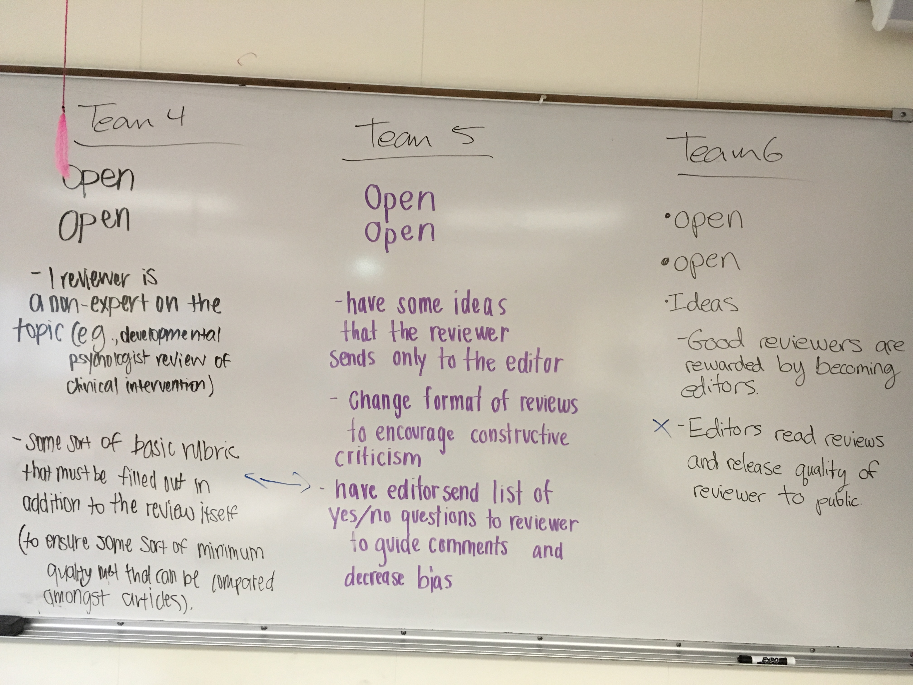

Gallery walk to stimulate early discussion on good science communication principles
Summer Session Term 1 course (May 15-June 24) from 11:00 a.m. - 12:15 p.m. daily
As instructor of record, I was in charge of all aspects of the course. The course learning objectives focused on students developing skills as critical consumers and communicators of academic research and applying these skills to current issues within psychology and neuroscience.
Most of the 8 regularly attending students took the course because they were a Psychology major or minor and varied in their knowledge of psychology and statistics and comfort level with reading academic articles. At mid-semester, students felt that the course pace was a little too fast and wanted more in-depth discussion of the content and articles. The changes that I then implemented to the course were effective: the course and instructor ratings improved, and efficacy of each was respectively rated at 4.75 (N = 4/8) and 4.88 or 5 rating (unofficial: N = 8/8 & official: N = 4/8). In particular, at the end of the semester, all 8 students strongly agreed that the course "feels like a community" and that the instructor "provided helpful feedback on the writing assignments" and "made positive improvements to the course based on student feedback at the mid-semester."
"I loved the community-feel and discussion oriented lectures of the class. Everything tied back to our readings, SciComm, and Cognitive Psychology which was nice as well."
"[Christina] did everything she could to support [my learning]. Very happy with her performance."
All resources are available at the (open) course website.
Professor Samanez-Larkin was the primary instructor of record. I taught the first (M, 1:40-2:30 p.m., N = 18) and second sections (Tu, 8:45-9:35 a.m., N = 17). The other two (Tu 10:20-11:10 a.m., T 1:40-2:30 p.m.) were taught by another TA. Our role was to plan and lead labs where students applied the statistics they learned in lecture before having to do their weekly homework assignments.
I contributed to course design by suggesting we add in explicit learning objectives for every lab as well as exit papers to gauge how well students learned and active learning techniques to encourage community engagement. I also suggested that we make the instructor keys for the labs available to students, especially if they wanted to review the labs later. This particularly helped when students asked for more sample write-ups. Finally, I brought in my mindset classroom research, surveying students on their learning beliefs. This allowed the teaching team to incorporate student data directly into labs and show students that we cared about more than their grades. For example, on Assignment 1 (Getting to Know You survey), while probing their baseline well-being, we stated that "in this course, we care about your learning and your overall well-being. This next survey will help us teach you better, by taking into account your well-being in addition to academic success."
As noted in the Intro/Getting to Know You survey, most of my 35 students were pre-med or natural science majors. At midsemester, my teaching effectiveness was rated between very good and excellent (mean = 4.19, N = 31/35). As a teaching team, we implemented significant changes to address student concerns about the course structure and labs. In the final/bonus points survey, 30/31 students (with 4 no responses) said that I took their midsemester feedback into account and improved the labs.
"...my TA is amazing and she always tries her best to present the material in a way that's easy to understand and to answer questions that people have! If I didn't attend lab and review the slides afterward I don't think I would be doing well on the assignments or have an A in this course."
"Lab section was incredibly useful and helped explain and practice examples from confusing topics from class."
Professor Roberto Cabeza was the primary instructor of record. I taught the second (Tu, 8:45-9:35 a.m., N = 7) and fourth (Tu, 1:40-2:30 p.m., N = 18) discussion sections. The other two (M, 4:55-5:45 p.m., Tu, 10:20-11:10 a.m.) were taught by another TA. Our primary role was to plan and lead students through sections with discussion of the academic articles and online psychology labs that the instructor of record had chosen. We also reviewed select lecture concepts through class demos.
I contributed to course design by suggesting we add in explicit learning objectives for every discussion section as well as exit papers to gauge how well students learned and active learning techniques to encourage community engagement. I also wrote sample test questions for reviewing material and explicit summaries of the previous week's takeaways, which I edited with the other TA. To facilitate discussion, we asked students to post questions about the articles and material on Sakai that we could address in section.
My Intro/Getting to Know You survey was an exit card for the first section, which showed varied backgrounds and knowledge of academic articles and. The second discussion section was therefore oriented around how to read academic articles. Each lesson was also designed to incorporate as many real-world examples or applications of the concept from the academic article or online lab (CogLab) as possible.
As part of the Teaching Triangles program (see Professional Development), my fifth discussion section was observed by a Political Science (Tues, 8:45-9:30 a.m.) and an English (Tues, 1:40-2:30 p.m.) graduate student.
Our end of semester survey and official Duke Hub section ratings suggested that students appreciated the real-life applications and in-depth break-down of the articles and CogLabs, feeling that I was open to questions, helpful, thorough, friendly, and knowledgeable and rating my instructor effectiveness between very good and excellent (mean = 4.60, N = 5/7 & mean = 4.38, N = 13/18).
"Christina is one of the most helpful and caring TAs I have ever had. She took the time to meet with me almost every other week after class to answer any of my questions, and if she did not know the answer immediately, she took the time to find the answer and email me later. Personality wise, she is very kind and welcoming, and I feel very comfortable sharing any questions and concerns with her."
"[Section] had a very nice structure to it. I liked coming in and knowing what was to be covered during each section, as well as knowing when I was confused on an academic article I would have help during discussion."
Team-based discussions on the peer review process & potential solutions for its flaws
Professor Tobias Egner was the instructor of record. I was a classroom TA to the 29 Psychology & Neuroscience distinction thesis students. I could not teach much, because I had a timing conflict with the second half of the course. I led one brief discussion on poster designs and filled in for the instructor once when students practiced orally defending their theses.
As part of my contribution to course design, I offered feedback and wrote some sections on both the syllabus (original, final) and lesson plans (original, final). I suggested that we scaffold and break up the assignments more.
It was also my responsibility to offer feedback on all the assignments except student thesis results and methods drafts. With earlier assignments, e.g., when students wrote the opening paragraphs of their theses, I tried to provide transfer-oriented feedback that emphasized a few broad and concrete points which students could focus on when actually writing their theses. Student feedback suggests that teaching efficacy was closer to excellent than very good (mean = 4.72, N = 18/29) and that students appreciated this feedback structure and detail.
"Christina offered exceptionally detailed feedback. I truly appreciated how she explained how she interpreted what I read, and how she thought that might differ from what I was actually trying to convey. I also loved how genuinely interested she seemed in my topic, and that she always had a concrete recommendation for what she identied as an area in which I could improve."
"Her feedback on my written sections was fantastic and super detailed. It was more helpful than the feedback I got from my actual thesis advisors!"
Professor Tobias Egner was the instructor of record. I was a classroom TA to 80 students. This class typically has a discussion section component, but our department had a TA shortage, so the sections were canceled. My responsibility was to grade the exams and additional assignments, which included reading and summarizing academic journal articles according to designated prompts.
I tried to make the feedback as useful as possible, creating individualized exam feedback packets for each student that explained why they had gotten a question wrong, what the right answer was, and where this topic was addressed in lecture. I also tried to make assignment feedback transfer-oriented, giving students something to consider for their next response paper.
Unfortunately, I did not realize that I would not receive any sort of official evaluation feedback, so I have no measure of whether my comments were helpful. I did send out an end of semester survey about the academic articles chosen to inform future course design. For instance, student data suggested that about half of respondents liked empirical papers as much as review articles and that they largely preferred to write response papers and take exams as part of their summative assessment in the course.
Guest Lecture, Introduction to Cognitive Psychology, 2018, Duke University
JavaScript/Amazon Mechanical Turk Workshop for Cognitive Neuroscience Admitting Program and Psychology & Neuroscience graduate students, 2017, Duke University
This is being developed into an in-depth class/workshop: Introductory Programming for Online Social Science Experiments
Yang, B.W.**, Bejjani, C.**, Albus, T.*, O’Connor, T.*, Ebrem, C.*, and Hard, B.M. (2020, January). Using Language to Measure Student Beliefs about Intelligence. Poster presented by B.W.Y. and C.B. at the 42nd annual meeting of the National Institute for Teaching of Psychology, St. Pete Beach, FL
PFF is a competitive program geared towards introducing fellows to various faculty roles, including those at local liberal arts colleges, a state school, an HBCU, and a research university through onsite visits and one-on-one faculty mentorship.
In Teaching Triangles, students in the Certificate in College Teaching program observe their peers teach and their peers also observe their teaching.
My TA for Introduction to Cognitive Psychology was observed by a Political Science (Tues, 8:45-9:30 a.m. section) and an English (Tues, 1:40-2:30 p.m. section) graduate student.